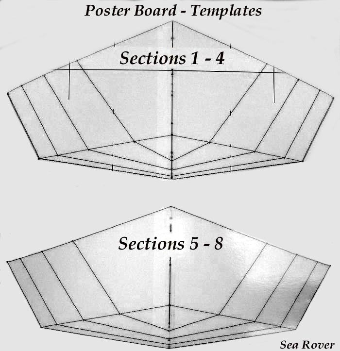

| Offset Templates | Menu Last Page Next Page |
|  |
Creating Cross Section Templates
Cross sections 1 - 4 are measured and drawn on a sheet of poster board with cross sections 5 - 8 drawn on another sheet using the offsets provided. Use the method described on the previous page to transfer the offsets.
The completed cross section templates will next be used to define the cross sections on HDPE plastic. |